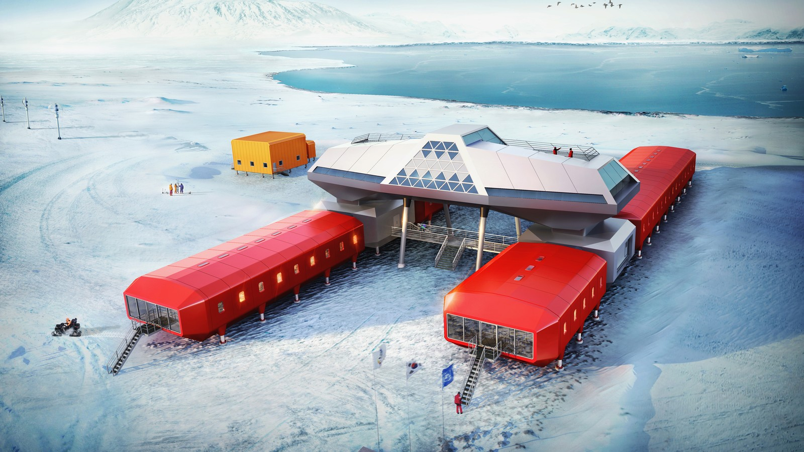

Project Overview
This educational website is dedicated to providing comprehensive information about Antarctica, the Earth's southernmost continent. Our goal is to raise awareness about this unique and fragile ecosystem, its scientific importance, and the challenges it faces in a changing climate.
Project Objectives
- Present accurate, up-to-date information about Antarctica
- Highlight the continent's role in global climate systems
- Showcase Antarctic biodiversity and unique adaptations
- Document the history of human exploration
- Explain current scientific research efforts
Target Audience
This resource is designed for:
- Students and educators
- Science enthusiasts
- Environmental advocates
- Anyone curious about Earth's polar regions
Methodology
All information presented on this site has been carefully researched using reputable sources including:
Scientific Publications
Peer-reviewed journals and research papers
Government Reports
Data from national Antarctic programs
International Organizations
Materials from SCAR, COMNAP, and the Antarctic Treaty System